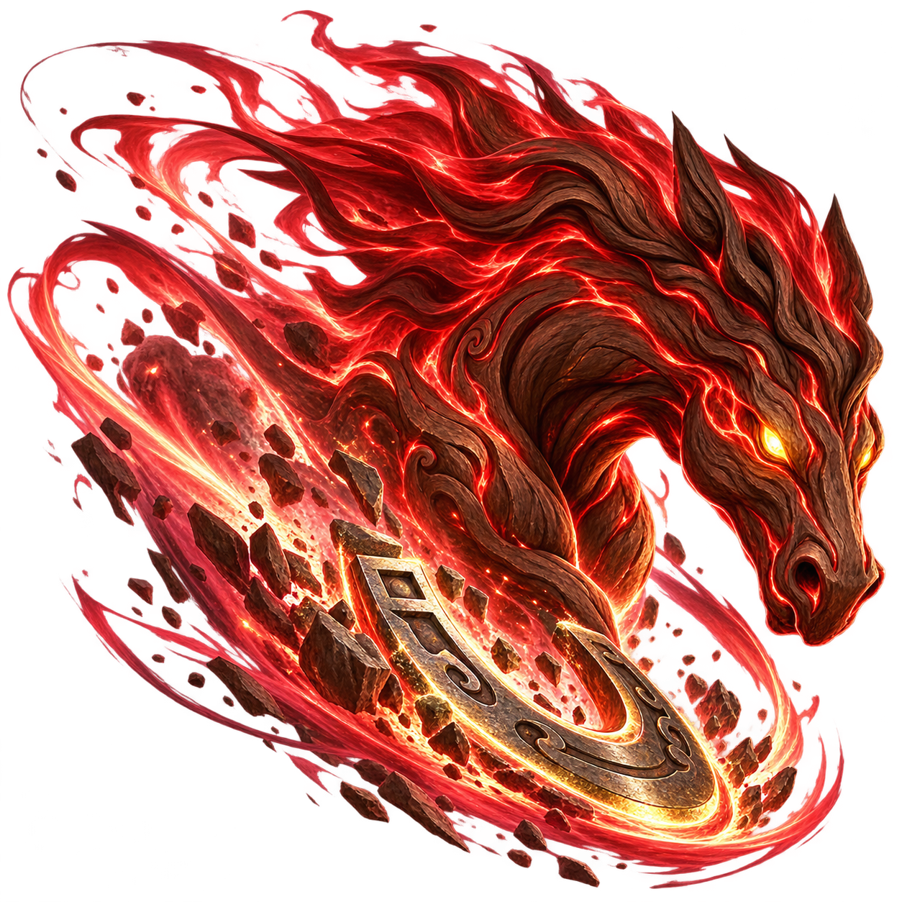

DOST Level Up 3.0 Esports Game Dev Challenge (Theme: Philippine Games and Sports)
Submission Deadline: October 25, 2026
Use the local host web server to capture clean, high-framerate footage without network jitter.
http://localhost:8000/index.html?demo (Autonomous CPU vs CPU match, loops infinitely).http://localhost:8000/index.html?practice (Player vs CPU practice).http://localhost:8000/index.html?net=local (Local multi-tab multiplayer without internet).auto → top → close → orbit).Low oblique / wheel-height camera showing the chalk circle, pavement textures, and the background sari-sari store and houses.
Scene setup: Mode ?demo, Camera mode close, HUD toggled with H. Kidlat (sparks) clashes with Tikbalang inside the chalk perimeter.
Secondary match matchup illustrating lighting, ground shadows, and boundary tension near the chalk ring.

Scene setup: Agimat facing Diwata. Demonstrates collision sparks, steering trajectories, and dog/chicken roaming area.
close or orbit)Profiles of the five mythical trumpos (Left to right: Kidlat, Tikbalang, Agimat, Diwata, Bakunawa).

top)Top-down view showing the crown sigils, directional orientation, and rotational symmetry.

| Trumpo & Element | Skill Icon & Concept | Side 3D Model | Top 3D Model | In-Game Action & Visual Effect |
|---|---|---|---|---|
|
Kidlat Lightning (Speed/Offense) Strong vs Diwata |

|

|
Descending branched golden lightning bolt with bright impact core and ground sparks. High burst damage. | |
|
Tikbalang Charge (Heavy Knockback) Strong vs Agimat |
 |

|

|
Spectral crimson horse-head rush with hoof-stomp shockwave on impact, pushing opponents toward the chalk boundary. |
|
Agimat Amulet Shield (Defense) Strong vs Kidlat |

|

|
Golden triangular sun medallion forming a protective jade shield that negates spin drain and deflects collisions. | |
|
Diwata Blessing (Spin Restoration) Strong vs Bakunawa |

|

|
Blooming floral crown with rising violet sparkles and soothing pulses that steadily recover lost spin RPM. | |
|
Bakunawa Eclipse (Curse / Inversion) Strong vs Tikbalang |

|

|
Coiled sea serpent swallowing the moon, temporarily reversing rival steering controls and inflicting shadow drain. |
Original hand-drawn design sketches for trumpo silhouettes, winding mechanics, and carousel interaction from the team notebook:

Use this comparison in the gameplay walkthrough video to emphasize originality and the design iteration from notebook sketch to 3D playable game.
Judges need to see the zero-install mobile controller mechanic in physical action.
| Shot Setup | Action to Film | Framing & Composition |
|---|---|---|
| Over-the-Shoulder Battle | Two players standing or sitting side-by-side holding smartphones, physically reacting to collisions on a laptop/TV screen. | Medium wide shot from behind the players, keeping both phones and the big screen in focus. |
| Winding (Paikot!) Close-Up | Player rapidly tracing tight circles on their phone screen with their thumb during the 3-second preparation phase. | Tight close-up on hands and screen, showing the winding ring and RPM meter filling. |
| Flick Throw (Bitaw!) Motion | Player tilting the phone to target, then making a sharp forward throwing gesture in mid-air. | Side profile capturing the arm movement followed by the trumpo dropping into the 3D ring. |
| Steering & Dash (Laban!) | Player tilting the phone like a steering wheel to curve the trumpo, then tapping the DASH button to trigger a collision. | Overhead or high-angle cut showing thumb hitting dash and screen reacting. |